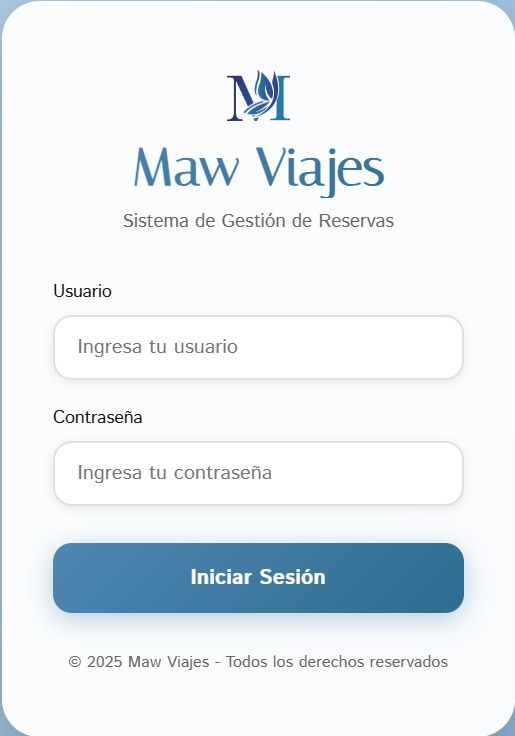
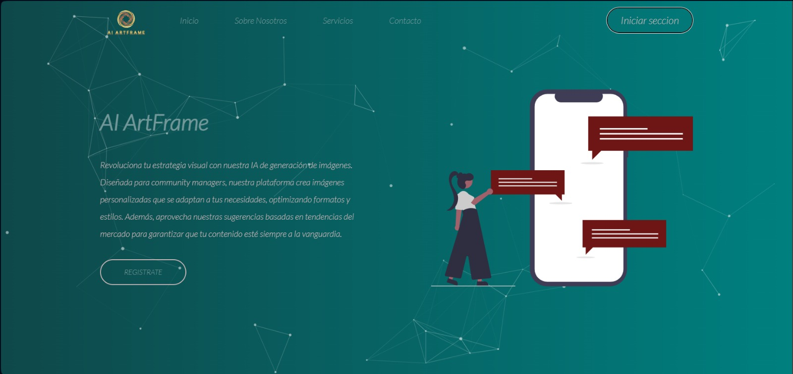
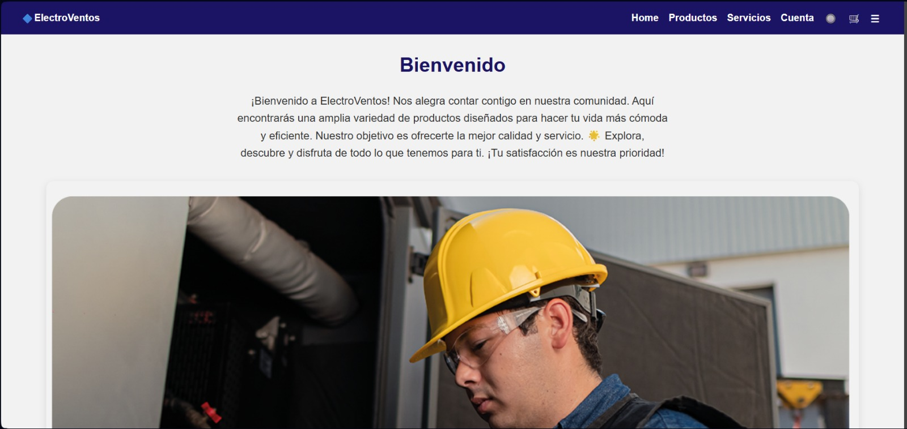

Maw Viajes
Explora una selección de diseños, interfaces y proyectos desarrollados a través de distintas etapas de aprendizaje, creatividad y experimentación.
Este espacio reúne distintos diseños y conceptos visuales donde exploro ideas, estilos y experiencias digitales a través de interfaces modernas, detalles visuales y una visión más creativa del frontend.
Ver diseños →
Maw Viajes

Plataforma Educativa

Clínica Cruz Jiminián